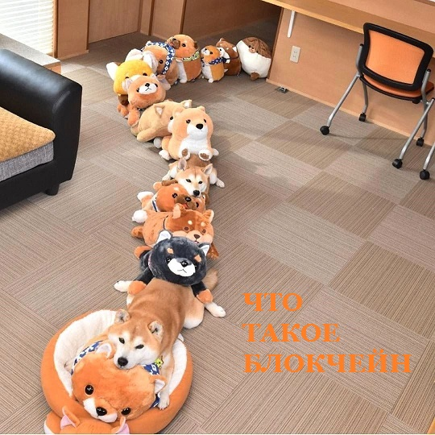
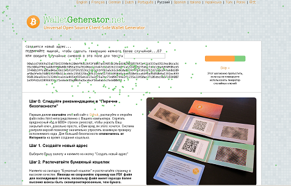
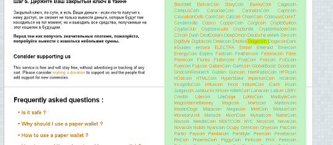
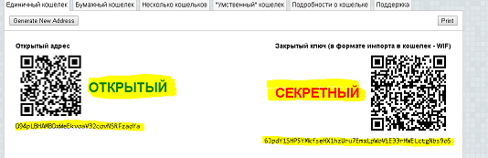
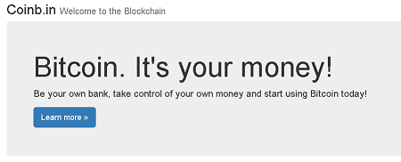
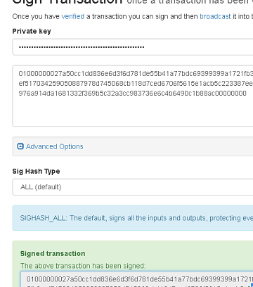
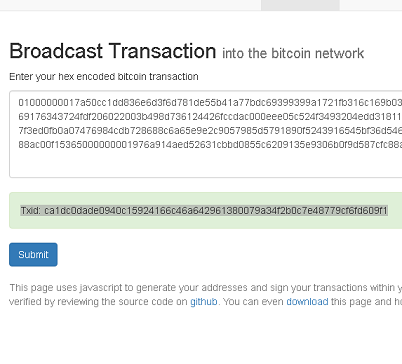
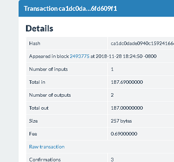

Что такое air-gapped computer. Создаем кошельки, отправляем транзакции используя изолированный компьютер с Lubuntu Linux Live USB(CD/DVD).
Криптовалюты - это одна огромная теория заговора, призванная научить нас экономике, финансам, политике и компьютерным технологиям. Leo Weese.
Мы с Вами успешно загрузились в ,созданную нами безопасную ОС с Lubuntu Linux Live USB(CD/DVD).
Если отключить все средства коммуникаций с внешним миром (Bluetooth / wifi и т. д.) получаем air-gapped computer или изолированный компьютер. Аir-gapped системы поднимают планку безопасности на высокий уровень, потому что им физически запрещено общаться с Интернетом и с любым другим устройством. Это не позволяет злоумышленнику, у которого нет физического доступа, активно атаковать компьютер и / или дистанционно управлять им.
Но, как и любые другие меры безопасности, Аir-gapped системы не являются панацеей, особенно если вы не доверяете системе за воздушным зазором, т.е. аппаратной части ПК. Существует несколько способов, которыми Аir-gapped система может предать своего пользователя, включая создание плохих транзакций и передачу секретных ключей через скрытый канал (например, USB-ключи, высокочастотный звук, скрытую активацию чипсета Bluetooth / wifi и т. д.). Хотя, такие утечки, при правильном использовании изолированных систем, маловероятны, их нужно учитывать.
В любом случае Аir-gapped система обеспечивает лучшую защиту, чем пользователи криптовалют получают от своих веб-кошельков и приложений для ПК и мобильных телефонов.
И так мы вооружены, предупреждены и уже почти готовы создать кошелек и отправить первые криптомонетки, осталось парочка нюансов.
Немного теории.

https://steemit.com/cryptocurrency/@voiloo/dogecoin-blockchain-visualized1.Мы знаем , что Биткойны как цифровые единицы, доступны через свои адреса. Из закрытого ключа мы получаем открытый ключ, а из открытого ключа биткойн адрес. Таким образом открытый и закрытый ключ однозначно связаны. И мы помним, что для того, чтобы получить доступ к биткойнам МЫ ДОЛЖНЫ ИМЕТЬ закрытый ключ, от соответствующего адреса. Кто имеет ключ тот и владелец биткойнов по этому адресу. Потеряли ключ, ВСЁ!!! потеряли доступ к биткойнам, если копии ключа нет восстановить не получится. У нас украли ключ, значит украли биткойны. Поэтому мы должна защищать наши закрытые ключи от потери и кражи.
2.Баланс кошелька равен сумме входящих транзакций минус сумма исходящих (или по другому сумме непотраченных (неизрасходованных) входов - UTXО). Пример:
От Васи нам 100 монет;
От Пети нам 30 монет;
От Сони нам 50 монет.
У нас три непотраченных входа и сумма баланса кошелька 180 монет.
Переведем 30 монет Лехе, для этого потратим вход Пети на 30 монет, и останется у нас на балансе два неизрасходованных входа (Вася - 100; Соня - 50) на сумму 150, тут понятно.
Теперь мы хотим перевести 15 монет Лене, и здесь есть один нюанс.
Мы не можем потратиь часть входа, только вход целиком!!! Остальную часть входа мы должны перевести самому себе в качестве сдачи. Иначе оставшаяся часть входа уйдет на комиссию майнерам.
Т.е. транзакция будет такая: Берем вход от Сони который 50 монет (можно взять любой из двух), переводим 15 монет Лене, переводим 34 монеты НА СВОЙ АДРЕС - самому себе. Оставшаяся часть 1 монета уходит на комисию майнерам. Комисию определяем сами. Здесь нужно быть внимательным. Отправленную транзакцию откатить нельзя!!!
3.Для создания ключей и подписания транзакций доступ в сеть не нужен. Т.е. мы можем безопасно генерировать наши адреса (ключи) и подписывать транзакции в офлайн режиме на изолированном компьютере. Онлайн доступ нужен для определения баланса кошелька и трансляции транзакции в сеть. Для последних операций закрытый ключ не нужен. Поэтому мы будем стремиться к тому, чтобы когда ПК находится онлайн на нем закрытых ключей не было.
ПОДИТОЖИМ:
* Береги закрытый ключ;
* Трать вход полностью, сдачу переводи себе;
* Стараемся, чтобы закрытый ключ не светился на компьютере в онлайн режиме.
Практика. Готовим инструменты.
Качаем:
WalletGenerator.net - генератор кошельков различных криптовалют.
Вitaddress.org - генератор кошельков Биткоин.
coinb.in - создание, отправка транзакций.
Кошелек Ethereum - создание, отправка транзакций.
monero-wallet - генератор кошельков Monero.
Кошелек Ethereum Classic - создание, отправка транзакций.
vanity-eth - создание Ethereum кошельков.
Для удобства мы собрали всё в один архив - AftercheCriptoTools .
BB76977BB0E7307202DE17D78DC877FC - MD5 .
019FBB580D4F427283D5E81742218CF670FF2B4B - SH1 .
Отключаемся от сети, копируем загруженные файлы на флэшку, перезагружаем ПК, ВНИМАНИЕ после перезагрузки к сети не подключаемся.
Практика. Генерируем ключи (адреса).
Проводите генерацию ключей и подписание транзакций в оффлайн режиме (без подключения к сети) на изолированном ПК после его перезагрузки.
После перезагрузки вставляем нашу флэшку с инструментами. Распаковываем содержимое. Из папки WalletGenerator.net-master.zip запускаем файл index.html.
.
Выбираем валюту, я выберу Dogecoin (для других валют процесс аналогичный), генерируем случайное число (водим мышкой,нажимаем кнопки), и получаем наш Dogecoin адрес. Ура.
.
.
У нас есть закрытый ключ, для управления нашими средствами, который нужно держать в тайне (например на специальной отдельной флэшке) и адрес на который мы можем получать наши криптомонеты. Сгенерируйте нескольо адресов сразу. Сохраните серетные ключи. Перезагрузите компьютер.
Практика. Отправляем монеты.
Для того чтобы перевести монеты их нужно где нибудь взять. Об этом чуть позже. Сейчас сосредоточимся на технических вопросах.
У нас есть монеты - Dogecoin, и мы хотим их куда нибудь перевести. Включаем сеть. На флэшке с инструментами заходим в папку coinbin-master и запускаем файл index.html.
.
Нажимаем Broadcast заходим в настройки (справа шестеренка),в поле Select which network you'd like to use for key pair generation. выбираем Dogecoin.
Нажимаем NEW---Transaction. В поле Address, WIF key or Redeem Script:, вставляем адрес на котором у нас есть монеты. Нажимаем Load.
На вкладке Inputs видим все неизрасходованные входы и баланс кошелька. Мы помним , что вход тратится полностью, поэтому в зависимости от того какую сумму мы хотим перевести выбираем тот или иной вход, остальные удаляем, или выбираем все входы если нужно перевести все средства.
На вкладке Outputs вставляем адрес(адреса) куда переводим монеты. Ту часть входа которая не потратиться на перевод нужно перевести себе, оставим немного майнерам,
нажмем Submit.
") .
.
1.Ниже появиться неподписанная транзакция в hex формате. Скопируйте её. Подпишем её. Для этого понадобиться наш закрытый ключ. Поэтому работаем в оффлайне.
Отключаемся от сети, достаем наш закрытый ключ, переходим на вкладку Sign.
В поле Private key вводим наш закрытый ключ, в поле ниже вводим нашу неподписанную транзакцию из п.1 жмем Submit.
2.Ниже появиться подписанная транзакция в hex формате. Скопируйте её. Уберите закрытый ключ. В идеале нужно перегрузить ПК. Включите сеть.
.
Переходим на вкладку Sign .
В поле Enter your hex encoded bitcoin transaction вставляем подписанную транзакцию из п.2. жмем Submit, если все правильно, получаем сообщение с Txid: нашей транзакции по которой можем отслеживать её статус.
.
.
Процесс отправки криптовалюты таким способом может показаться сложным, после нескольких переводов, вы научитесь делать это достаточно быстро. Да, стационарные кошельки и веб кошельки позволяют переводить средства более удобным способом, НО при этом, на данный момент, они обеспечивают низкий уровень безопасности, и меньший контроль за процессом создания транзакций.
Подробная инструкция в видео на нашем канале.
RawHexDecoder
format=hex
format=hex
bitcoincharts.com
www.blockchain.com
blockcypher.com btc decodetx
dogechain.info
admin@afterche.com
11.2018 г.
Защитите вашу конфиденциальность при использовании криптовалют.
Защитите Ваши интернет платежи с помощью Linux Live CD(USB).
Создание Lubuntu Linux Live CD в Windows.
Создание Lubuntu Linux Live USB в Windows.
Проверка целостности дистрибутива Lubuntu Linux Live USB(CD/DVD) в Windows.
Проверка целостности дистрибутива Lubuntu Linux Live USB(CD/DVD) после записи на USB(CD/DVD).
|
|

Home Nagrania Projects |


|